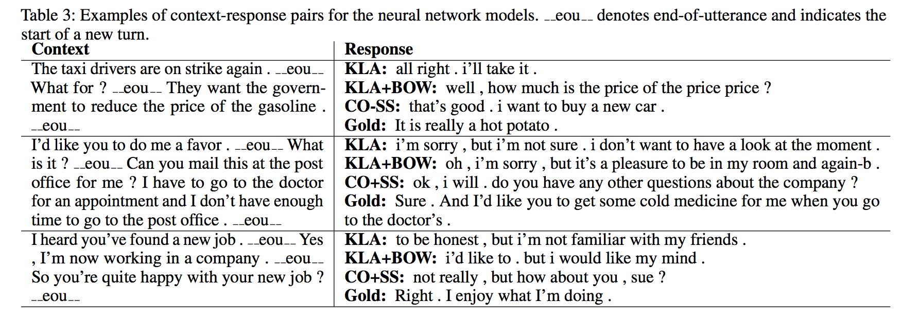

Improving Variational Encoder-Decoders in Dialogue Generation
Мотивация
Когда-то давным давно мы уже обсуждали вариационные автоэнкодеры для текста и их проблемы, а так же обсудили возможный способ их решения. Однако, у того подхода была проблема: уменьшая мощность декодера мы получали более осмысленные латентные представления, но качество генеративной модели ухудшалось. В данной работе хочется получить именно хорошую генеративную модель, поэтому исправлять VAE будем иначе.
Вообще, статья про диалоговые модели, но диалоговая модель – это просто обусловленная языковая модель, поэтому я расскажу про вариационные языковые модели, а “диалоговость” додумаете себе сами, просто обусловив всё на свете на диалоговый контекст \(c\).
Немного анализа
Оптимизация целевой функции VAE эквивалентно максимизации следующего
\[ \log \mathbb{E}_{p(z)} p(x|z) - D_{KL}(q(z|x) \mid\mid p(z|x)) \]
Первое слагаемое в точке максимума (по генеративным моделям) даёт \(\log p_\text{data}(x)\), и если декодер \(p(x|z)\) достаточно мощный, чтобы выучить \(p_{\text{data}}(x)\) (настоящее распределение данных) даже игнорируя \(z\), то это сгодится для оптимального решения. Однако, на практике может оказаться, что выучить желаемую модель проще, если всё-таки использовать \(z\). Рассмотрим простой пример: пусть нас интересует \(p(x) = \mathcal{N}(0, 1)\), а \(p(z) = \mathcal{N}(3, 1)\). Тогда чтобы \(p(x|z)\) могло выучить искомую модель без использования \(z\), ей нужно уметь моделировать любые гауссианы, в то время как с использованием вспомогательной случайности \(z\) можно обойтись классом детерминированных сдвигов на константу: \(p(x|z, a) = \delta(x - z + a)\).
С другой стороны вычитаемое (KL-дивергенция с настоящим апостериорным) минимизируется, когда приближённое апостериорное точно равно настоящему. Если декодер не использует код, то настоящее апостериорное совпадает с априорным и легко приближается с помощью \(q(z|x)\). Но если декодер использует код, то настоящее апостериорное никогда не будет лежать в факторизованном семействе, ведь правдоподобие (в формуле Байеса) связывает все скрытые переменные. Т.е. если код используется, то целевой функционал “штрафуется” за это, если только мы не умеем очень хорошо приближать настоящее апостериорное. Соответственно, если мы берём какое-то простое семейство приближённых апостериорных, то оно не в состоянии генерировать сложные коды (в смысле сложности их распределения), поэтому модели проще отказаться от кода вообще, чтобы не платить “штраф” за использование скрытых переменных.
Авторы утверждают таким образом, что при оптимизации этой целевой функции (что эквивалентно оптимизации ELBO), мы имеем противоборствующий эффект от этих двух слагаемых. С одной стороны, первое слагаемое пытается использовать использовать скрытые переменные активнее, а с другой стороны второе пытается от них избавиться. И то, что в текстовых VAE зачастую побеждает второе, есть результат того, что польза от использования латентных переменных не оправдываем цены их введения.
Обзор существующих методов
Соответственно, авторы выделяют два главных направления решения этой проблемы: либо сделать использование латентных переменных более выгодным, либо уменьшить цену их использования. В первое направление попадают методы вроде ослабления декодера: word-dropout (Bowman et al.), использование декодеров с ограниченым рецептивным полем (Yang et al., Chen et al.), увеличение полезности кода путём предсказания BoW-представления ответа по нему (Zhao et al.). Ко второму направлению относится использование более мощного семейства априорных и приближённых апостериорных распределений, что позволяет уменьшить цену использования латентных переменных: Serban et al. предложили заменить Гауссовские распределения на кусочно-постоянное, которое обладает большей гибкостью (может быть мультимодально, например), Salimans et al. предложили использовать MCMC для семплирования латентных переменных. А ещё Rezende and Mohamed, Kingma et al. и Chen et al. предложили использовать нормализующие потоки для более выразительных апостериорных распределений. Авторы говорят, что для генерации текста эти модели пока не применялись, и сами тоже этого почему-то не делают.
Предложенная модель
Поскольку авторы не хотят жертвовать генеративной мощностью модели, они выбирают другой путь: более сложные распределения для кодов. И чтобы не размениваться по мелочам, сразу выбирают “неявную модель”: семпл получается путём пропуска нормального шума через обучаемую нейросеть. В обычном ELBO так сделать не получится, т.к. мы не сможем посчитать KL-дивергенцию с априорным, ведь не можем посчитать плотность того, что получается на выходе у нейросети. Поэтому авторы ничтоже сумняшеся заменяют KL-дивергенцию на JS-дивергенцию, оптимизацию которой можно свести к GAN’оподобной процедуре, а там плотности не нужны.
\[ \mathbb{E}_{q(z|x)} \log p(x|z) - D_{JS}(q(z|x) \mid\mid p(z)) \]
Но и эта постановка авторам не нравится, т.к. GAN’ы обучать-то сложно! Поэтому они заменяют GAN на VAE… Непонятно? Следите за руками:
- Хочется обучать VAE с неявным распределением на \(z\), т.е. таким, из которого мы только семплировать умеем, а плотность считать не можем.
- Плотность нам нужна только для подсчёта KL-дивергенции, поэтому давайте заменим её на какую-нибудь дивергенцию, которую можно посчитать без плотности 1. Дивергенцию Йенсена-Шеннона, например.
- JS-дивергенцию \(D_{JS}(q(z|x) \mid\mid p(z))\) мы можем оценить в духе GAN’ов, по-сути, минимизация такой дивергенции по первому аргументу эквивалентна обучению генеративной модели \(q(z|x)\) для “ground truth” распределения \(p(z)\). Поэтому давайте обучим такую модель с помощью VAE, т.е., условно говоря, насемплируем \(z \sim p(z)\), заведём \(q(\varepsilon|x, z)\) – inference-сеть, \(p(z|\varepsilon)\) – генеративную сеть и априорное \(p(\varepsilon|x)\), обучим из этого VAE, а потом скажем, что генеративный процесс \(x \mapsto \varepsilon \mapsto z\) определяет процесс семплирвоания из \(q(z|x)\) (то есть, задает неявную генеративную модель). Приводить это должно к следующей целевой функции \[ \mathbb{E}_{q(\varepsilon \mid x, z)} \log p(z\mid\varepsilon) - D_{KL}(q(\varepsilon|x, z) \mid\mid p(\varepsilon | x)), \quad\quad z \sim p(z) \]
На этом интересные идеи в статье заканчивается, потому что по всей видимости в этот момент у авторов произошёл “math overflow” и дальнейшее никакой математикой не описывается. А именно, JS-дивергенцию они заменили на
\[ \mathbb{E}_{q(\varepsilon|\hat{z})} \log p(\hat{z}|\varepsilon) - D_{KL}(q(\varepsilon|\hat{z}) \mid\mid p(\varepsilon)) \]
Здесь \(\hat{z}\) – это выход какого-то RNN-энкодера для последовательности \(x\). То есть теперь мы учим модель не семплы из \(p(z)\) генерировать (т.е. регуляризовываем модель), а приближать распределение выходов некоторого RNN-энкодера. Эта модель будет хорошо работать, если наше вариационное приближение \(q(\varepsilon|\hat{z})\) хорошо приближает настоящее апостериорное \(p(\varepsilon|\hat{z})\). Тут авторы предлагают сразу учить RNN-энкодер так, чтобы \(D_{KL}(q(\varepsilon|\hat{z}) \mid\mid p(\varepsilon))\) был не больше какого-то значения \(\alpha\), достигается это просто добавлением ещё одного слагаемого к лоссу
\[ \max \left( \alpha, D_{KL}(q(\varepsilon|\hat{z}) \mid\mid p(\varepsilon)) \right) \to \min_{\theta_{\text{RNN-Enc}}} \]
Однако, непонятно, действительно ли это делает апостериорное более “приближаемым”.
Ещё авторы используют scheduled sampling, но это вредная и математически некорректная процедура.
Итого, модель состоит из двух частей: автоэнкодера с параметрами \(\theta\) и CVAE с параметрами \(\phi\), обучающимися со следующими лоссами
\[ \tfrac{1}{2} \mathbb{E}_{q_\phi(\varepsilon|\hat{z})} \|g_\phi(\varepsilon) - \hat{z}\|^2 + D_{KL}(q_\phi(\varepsilon|\hat{z}) \mid\mid p_\theta(\varepsilon)) \to \min_\phi \]
\[ \max(\alpha, D_{KL}(q_\phi(\varepsilon|\hat{z}) \mid\mid p_\theta(\varepsilon))) - \mathbb{E}_{q_\phi(\varepsilon|\hat{z})} \log p_\theta(x|z) \to \min_\theta \]
Где \(\hat{z} = f_\theta(x)\), а \(z\) – scheduled sampling, иногда берущий \(\hat{z}\) с некоторой отжигаемой вероятностью \(p\), и \(g_\phi(\varepsilon)\) (семпл из VAE) с вероятностью \(1-p\).
Эксперименты
Сравниваются на задачах моделирования диалогов с базовым HRED’ом (не вариационная модель) и вариационным HRED’ом с разными хаками: KL-annealing (KLA), word dropout (DO), free bits (FB), Bag-of-Words loss (BOW). Свою модель авторы называют CO (collaborative model, видимо, из-за коллаборации VAE и AE).
Не очень понятно, почему выделена меньшая KL дивергенция – кажется, это наоборот означает, что код близок к априорному шуму и полезной информации не несёт (всё тот же posterior collapse).
Ещё авторы считают embedding-level метрики (типа чтобы захватить похожесть на уровне всего предложения)
Так же было проведено Human Evaluation: для 100 случайных контекстов 6-ю моделями с использованием бимсёрча были сгенерированы ответы и оценены людишками по трём пунктам: Fluency (правильность использования языка), Coherency (соответствие ответа контексту) и Diversity (“нескучность” ответа)
Ну и немного семплов

Резюме
Всё началось очень интересно: правильные мысли об усложнении приближённого апостериорного, но закончилось какими-то ad hoc ужасами. Взяли обычный автоэнкодер для текста и воткнули внутрь VAE. Все гарантии на оптимизацию маргинального правдоподобия (или её нижней оценки) были утеряны.
После такого действа наша целевая функция уже не будет нижней оценкой на правдопдобие, но её оптимизация по параметрам генеративной модели всё ещё эквивалентна тому, что происходит в обычном VAE.↩